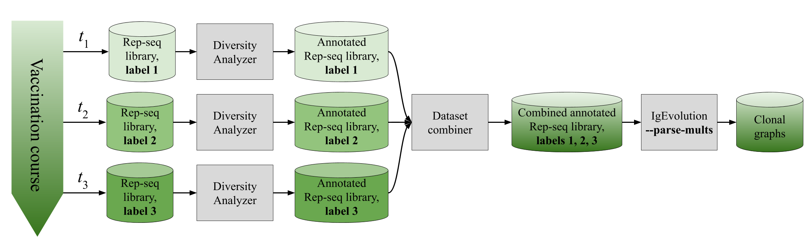
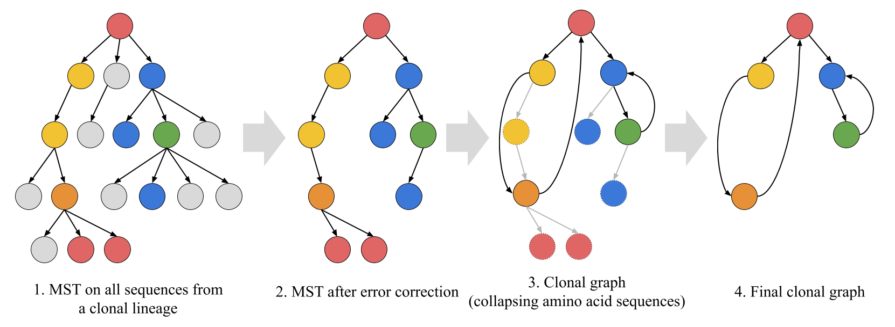

General info
IgEvolution performs simultaneous repertoire and clonal tree reconstruction of a Rep-seq library taken from an antibody repertoire. To run IgEvolution, first run DiversityAnalyzer and then provide the resulting output directory as an input for IgEvolution:

./diversity_analyzer.py -i REP_SEQ_FILE -o DIVERSITY_ANALYZER_DIR -l IG
./ig_evolution.py -i DIVERSITY_ANALYZER_DIR -o IGEVOLUTION_DIR
- REP_SEQ_FILE: Rep-seq library in FASTA/FASTQ format. Please note that Diversity Analyzer expects Rep-seq libraries with single layout of reads. If the original library is paired-end (e.g., raw files from Illumina MiSeq), please merge paired-end reads.
- DIVERSITY_ANALYZER_DIR: output directory of Diversity Analyzer.
- IGEVOLUTION_DIR: output directory of IgEvolution.
Please note that both DiversityAnalyzer and IgEvolution check the existence of output directory, remove the directory if it exists, and create an empty directory with name DIVERSITY_ANALYZER_DIR or IGEVOLUTION_DIR. So, we highly recommend to not specify an existing directory (e.g., the home directory) as output directories!
If you want to launch IgEvolution on several Rep-seq datasets (e.g., time course of a vaccination), we recommend to combine the results of Diversity Analyzer on individual Rep-seq datasets, and run IgEvolution on the combined dataset.
Optional parameters
| Description | Option | Values |
| Minimal lineage size | --min-lineage INT |
Minimal size of the processed lineages. Default value is 1000. Please note that a typical Rep-seq dataset (100k–1M reads) includes tens of thousands of small lineages (<100 sequences), so decreasing this parameter might significantly slow down the tool. |
| Minimal graph size | --min_graph INT |
Minimal size of the reported clonal graphs. Default value is 10. |
| Skip error-correction | --skip-err-corr |
Skip the error correction step. Please apply this option only if you are sure that input sequences are accurate. Otherwise, the results of IgEvolution might be biased. |
| Process combined dataset | --parse-mults |
Specify this option for processing a dataset that was combined from several Rep-seq libraries [details...]. |
| Clonal decomposition | --clonal-dec FILENAME |
This option is reserved for future development of IgEvolution. |
Output
IgEvolution decomposes input sequences into clonal lineages; performs error-correction and clonal reconstruction within each clonal lineage; outputs the result of clonal reconstruction as a collection of clonal graphs; and visualizes clonal graphs and graph statistics in user-friendly HTML format [details...].
Combining several Rep-seq datasets
Some studies analyze the dynamic of antibody response or antibody response in various tissues. In this case, more than one Rep-seq library can be available. Such libraries can be analyzed together using the following pipeline:
- Run Diversity Analyzer on each of the original libraries.
- Prepare a configuration file config.txt in following format:
- Combine datasets together using the
combine_datasets.pyscript: - Run IgEvolution on the combined datasets with
--parse-multsoption:
Directory Label
path_to_Diversity_Analyzer_dir_1 label_1
...
path_to_Diversity_Analyzer_dir_N label_N
where label_i is a number.
An example of the configuration file for flu vaccination study by Ellebedy et al., Nat Immunol, 2016 (NCBI project PRJNA324093, donor 4) is provided below. We selected four Rep-seq libraries corresponding to HA-positive B cells taken from 3 time points: 7th, 14th, and 28th days after the vaccination of the donor #4. We used time points of the original libraries as labels.
Directory Label
python combine_datasets.py -c CONFIG.TXT -o OUTPUT_COMBINED_DIR
./ig_evolution.py -i OUTPUT_COMBINED_DIR -o IGEVOLUTION_DIR --parse-mults

Output details
Clonal decomposition
IgEvolution decomposes input sequences into clonal lineages according to V and J hits and similarity of CDR3s. IgEvolution reports statistics of clonal lineages into a tab-separated table raw_lineage_stats.txt. Each line corresponds to a lineage, lineages are sorted according to the descending order of the sizes. raw_lineage_stats.txt includes the following fields:
| Field | Description |
| LineageID | the unique identifier of the lineage |
| LineageSizeBeforeCleaning | the number of sequences composing the lineages before the error correction |
| NumNonTrivialSeqs | the number of non-trivial sequences (i.e., with multiplicity at least 2) composing the lineages before the error correction |
| MaxMultiplicity | the maximal sequence multiplicity among all sequences |
| ClosestV, ClosestJ | the closest V gene and J gene (computed by majority of raw sequences) |
| RootId | the header of the sequence that is closer to germline than other sequences of the lineage |
| RootSeq, RootCDR3 | the nucleotide sequence and the CDR3 sequence of the root |
| RootDistanceFromGermline | the distance between the root sequence and the closest germline genes |
Note that clonal decomposition is computed on sequences before error-correction, so the sizes of clonal graphs corresponding to the lineages will be significantly smaller.
Clonal graphs
Clonal graph is a new structure introduced in the IgEvolution paper. A clonal graph is an amino acid representation of the maximum spanning tree (MST) computed on putative nucleotide sequences from a clonal lineage. Vertices of the clonal graph correspond to distinct amino acid sequences. An edge connects amino acid sequences v and w if they correspond to nucleotide sequences a and b that were adjacent in the MST. In other words, clonal graph is computed by collapsing vertices of the MST corresponding to the same amino acid sequences.

Grey vertices correspond to sequences classified as erroneous. Vertices with the same non-grey color correspond to identical amino acid sequences.
The computed clonal graphs are written to clonal graphs directory. Each graph is described in two files: LINEAGE_ID_seqs.txt and LINEAGE_ID_shms.txt LINEAGE_ID used in the names of clonal graphs match with the IDs used in raw_lineage_stats.txt.
LINEAGE_ID_seqs.txt
LINEAGE_ID_seqs.txt is a tab-separated data-frame containing information about sequences of the clonal graph. The file include the following fields:
| Field | Description |
| Index | ID of the amino sequence in the clonal graph. IDs vary from 0 to N-1, where N is the number of sequences in the graph. IDs of sequences matches with IDs used in LINEAGE_ID_shms.txt for edge description. |
| AA_seq | Amino acid sequence. |
| AA_diversity | The number of distinct nucleotide sequences composing the amino acid sequence. |
| Original_mults, Original_headers | Multiplicities and headers of the nucleotide sequences composing the amino acid sequence separated by commas. |
| Original_labels | Labels of the nucleotide sequences composing the amino acid sequence separated by commas. Labels are assigned to the combined datasets. In case of non-combined datasets, all labels are 0. For the details, please go to the Usage details section. |
| CDR1, CDR2, CDR3 | Amino acid sequence of CDR1, CDR2, CDR3 (according to IMGT notation). |
| V_gene, J_gene | The closest V gene and J gene (computed by the majority of sequences from the clonal graph). |
LINEAGE_ID_shms.txt
LINEAGE_ID_shms.txt is a tab-separated data-frame describing structure of the clonal graph and SHMs. SHMs are computed as differences between amino acid sequences connected by an edge in the clonal graph. An SHM is defined as a triplet: position in an amino acid sequence, a source amino acid, and a target amino acid. The file include the following fields:
| Field | Description |
| Position, Dst_AA, Src_AA | SHM described as a triplet. |
| Edges |
Comma separated list of edges containing the SHM.
Each edge is described as a pair start_ID-end_ID (e.g., 0-11).
IDs of start and end vertices are consistent with sequence IDs in the LINEAGE_ID_seqs.txt file.
|
| Multiplicity | The number of times SHMs occurs in the graph. |
| Region | Structural region (CDR / FR) corresponding to the SHM. |
| Has_reverse |
Is true, if the graph also contains an SHM Position, Src_AA, Dst_AA.
|
| V_gene, J_gene | The closest V gene and J gene (computed by the majority of sequences from the clonal graph). |
Summary annotation report
IgEvolution compiles all computed statistics and plots into a single report in HTML format. HTML reports for the datasets used in the paper can be found at IgEvolution results repository.
Citation and feedback
If you use IgEvolution in your research, please cite our paper: Yana Safonova and Pavel A. Pevzner. IgEvolution: clonal analysis of antibody repertoires. bioRxiv 725424; doi: https://doi.org/10.1101/725424.
If you have any questions or troubles with running IgEvolution, please contact Yana Safonova. We also will be happy to hear your suggestions about improvement of our tools!